Astral Surge
Daniel Vishnevsky
About
Astral Surge is a top-down 2D speedrunning game focused on collecting all coins in time while evading traps and enemies. Features a fully-fledged level editor and endless mode.
Features
This was a sequel to my original terminal game Abyss Descendant. It basically features everything that the terminal version did except for saves and it was more focused on the gameplay instead of the story.
Astral Surge contained an endless mode and a level editor just like its predecessor did and was focused on customizability and modding support. It was basically its own game engine.
Development
I started developing Astral Surge somewhere in the end of 2024, about 3 months after starting coding in C++. Just like Pong I originally used SFML but quickly switched to CX while developing it on the side. I barely knew how to code and it shows when reading my old code as it has too many useless classes, namespaces and templating.
I documented my whole journey on my old Youtube channel post the switch to CX. The source code is not available anywhere and most likely won't be. Since then I kept working on CX and so the current code is not stable nor compilable due to deprecated features. I might revive this in the future, this is also the reason the gallery is so dry.
Also during the making of this game I learned to do pixel art. Before I wasn't able to draw anything that well but I learned everything from just doing it. I'm pretty proud with the art I've done especially the newer 64x64 industrial art.
I'll leave both the SFML and CX version of the game in the gallery.
Gallery
Old videosScreenshots
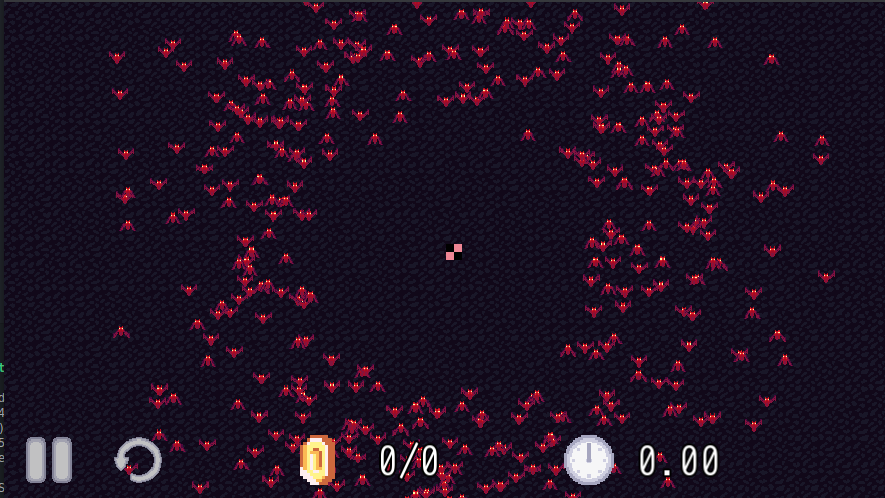
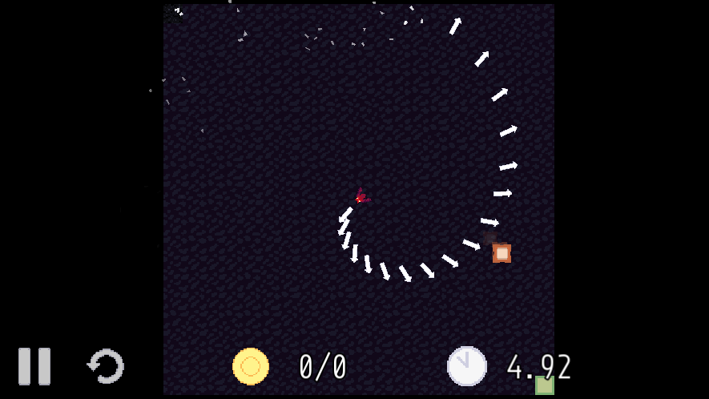
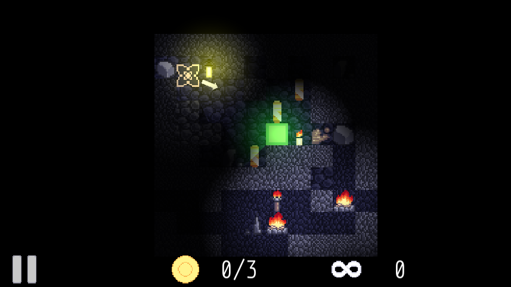
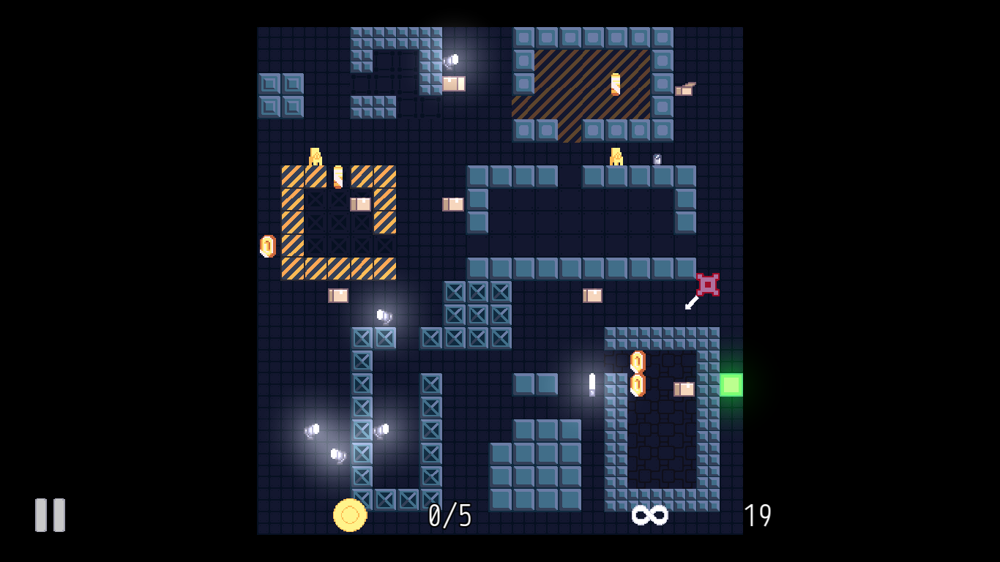
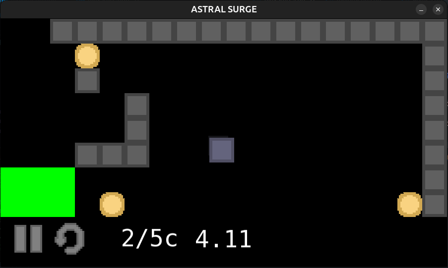
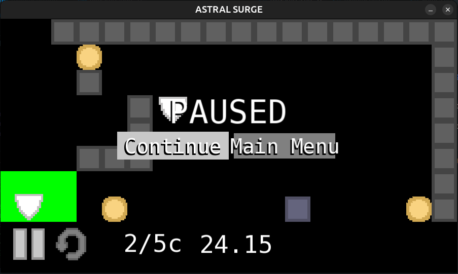
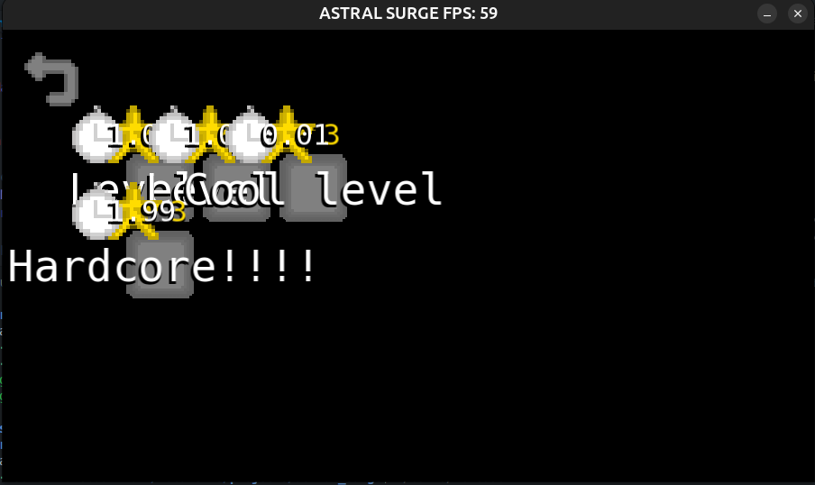
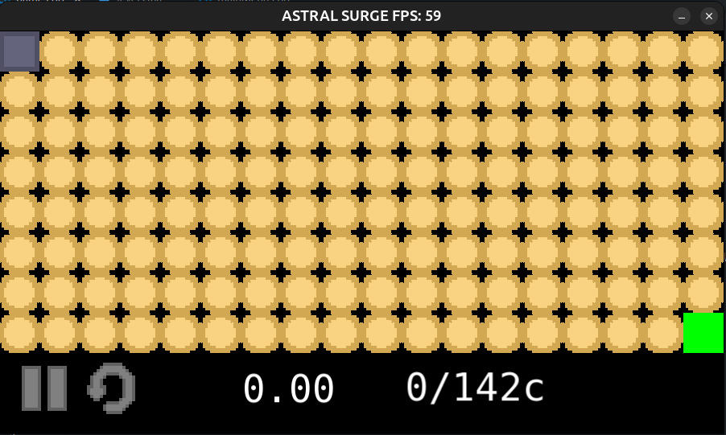
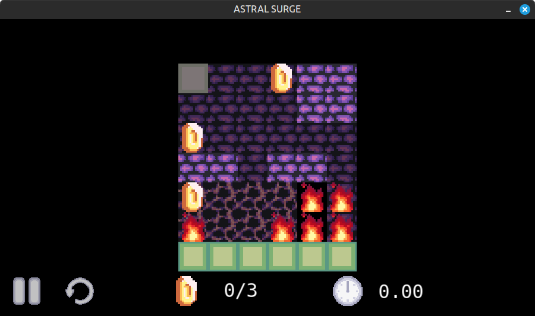
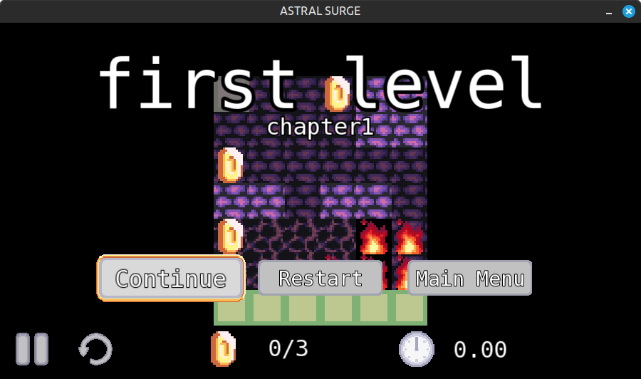
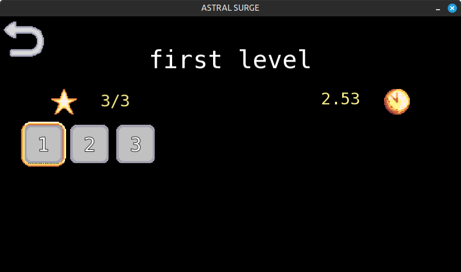
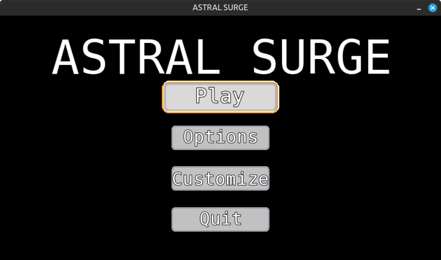